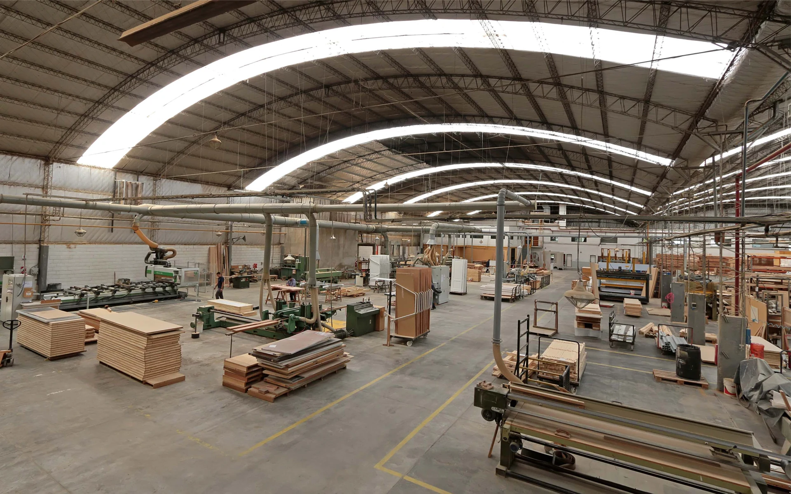

Nuestra empresa
La experiencia se construye.
Desde 1958.
La madera, la tecnología y el trabajo de cada día se encuentran en nuestras puertas.


Fabricación propia
Del material
a la puerta.
Fabricamos puertas de interior en nuestra planta, combinando maquinaria y trabajo sobre cada pieza. El diseño, la preparación y la terminación forman parte de un mismo proceso.
Desarrollamos distintas líneas y sistemas para acompañar las necesidades de viviendas y proyectos.
Soluciones para profesionales
Materia y oficio
El valor está
en los detalles.
La elección de la madera, la textura de una superficie y la precisión de los encuentros construyen el carácter de una puerta.
Según la línea, ofrecemos madera maciza, enchapados, foliados y terminaciones pintadas. Nuestro equipo comercial te acompaña para elegir las opciones adecuadas para tu espacio.
Explorá nuestras líneas